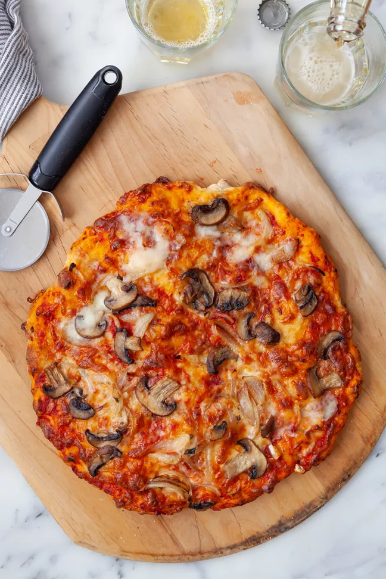

Homemade Pizza

Descrption
Tasty, delicious, and all from you! This simple recipe allows you to customize your pizza however you want-- including the dough!
Ingredients
- Water
- Active Dry Yeast
- Bread Flour
- Extra Virgin Olive Oil
- Salt & Sugar
- Proof the Yeast
- Make & Knead Pizza Dough
- Let Dough Rise
- Preheat Pizza Stone (or pan or sheet)
- Divide dough into two balls
- Prep toppings
- Flatten dough
- Brush dough with olive oil
- Spread with sauce and toppings
- Bake
- Voila!